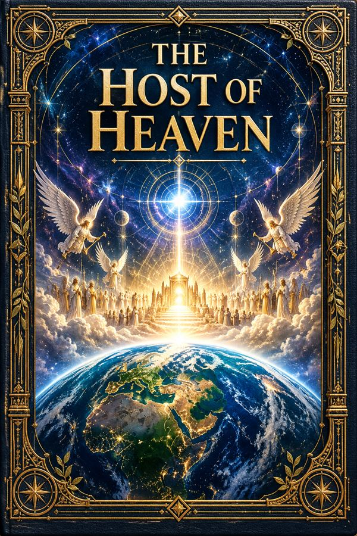

The Host of Heaven
Illustrated Identity Registry
Open the atlasA source-graded illustrated registry of ancient Near Eastern, Egyptian, Greek, biblical, and Second Temple identities.
Scripture
1 Kings 22:19Deuteronomy 32:8–9Job 1:6

Illustrated Identity Registry
Open the atlasA source-graded illustrated registry of ancient Near Eastern, Egyptian, Greek, biblical, and Second Temple identities.